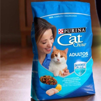

Marcas sugeridas


Lo primero que debes recordar es que los gatos son de naturaleza estrictamente carnívora. Su dieta debe estar compuesta por un alto nivel de proteínas de origen animal, ya que solo estas contienen los aminoácidos esenciales para una salud óptima de tu felino: la taurina, la arginina, la vitamina A preformada y el ácido graso araquidónico, entre otros. Es decir que, por nada del mundo, un gato puede consumir una dieta vegetariana sin que a corto o largo plazo padezca malnutrición. Siendo más específicos, tu gato debe consumir cada día un total de 41 micronutrientes esenciales, pero para que no te desesperes a la hora de elegir qué tipo de comida comprar a tu gato, aquí te dejamos una lista de qué debe incluir el concentrado, así como te especificamos cómo varía el alimento y las porciones según la edad y condición de tu mascota y qué alimentos de consumo humano puedes anexar a su dieta: